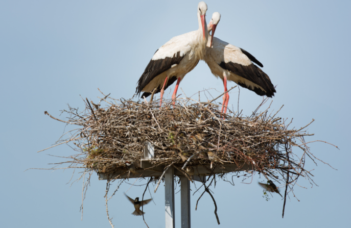
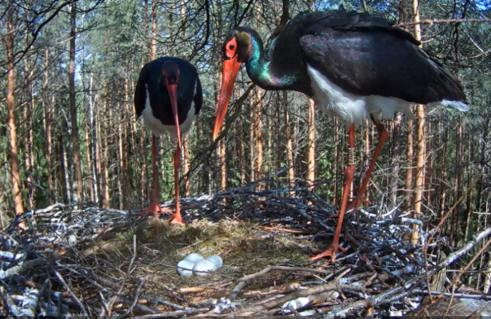
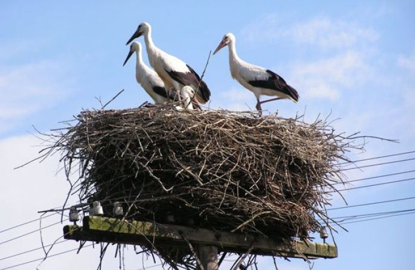

Сервіс моніторингу та зібрання даних
щодо пташиних гнізд на лінії електропередачі
* Для перегляду даних необхідна реєстрація
| Номер в реєстрі | Координати | Область | Дата реестрації | Опис, додаткова інформація | Фото |
|---|---|---|---|---|---|
| 1 | 48.473734, 37.082929 | Донецька обл. | 24.08.2020 | Реконструйоване гніздо. Гніздо перенесли до діючої анкерної опори ПЛ 35 кВ на спеціально встановлену стійку СК-22. |  |
| 2 | 48.749060, 39.260875 | Луганська обл. | 12.05.2020 | Реконструйоване гніздо. Гніздо встановлене на опорі 0,4 - 10 кВ |  |
| 3 | 48.344774, 33.504967 | Дніпропетровська обл. | 27.04.2020 | Реконструйоване гніздо. Гніздо встановлене на опорі 0,4 - 10 кВ |  |